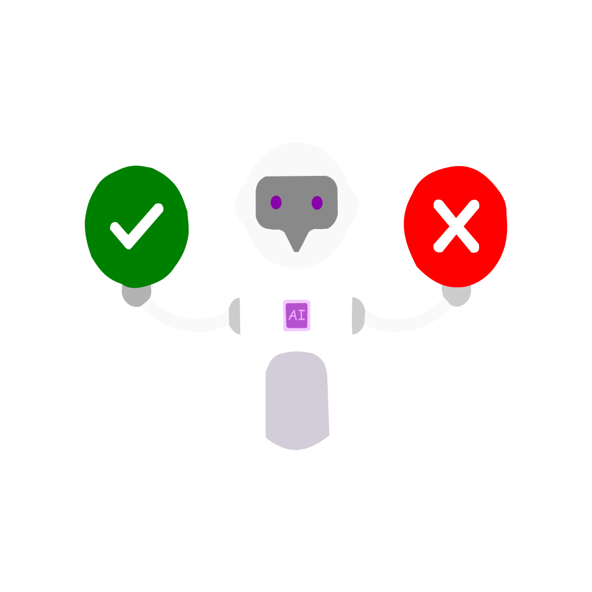

<!DOCTYPE html>
<html lang="en">
  <head>
    <meta charset="utf-8" />
    <meta name="viewport" content="width=device-width, initial-scale=1.0, maximum-scale=1.0, user-scalable=no" />

    <title></title>
    <link rel="stylesheet" href="dist/reveal.css" />
    <link rel="stylesheet" href="dist/theme/black.css" id="theme" />
    <link rel="stylesheet" href="plugin/highlight/zenburn.css" />
	<link rel="stylesheet" href="css/layout.css" />
	<link rel="stylesheet" href="plugin/customcontrols/style.css">


    <script defer src="dist/fontawesome/all.min.js"></script>

	<script type="text/javascript">
		var forgetPop = true;
		function onPopState(event) {
			if(forgetPop){
				forgetPop = false;
			} else {
				parent.postMessage(event.target.location.href, "app://obsidian.md");
			}
        }
		window.onpopstate = onPopState;
		window.onmessage = event => {
			if(event.data == "reload"){
				window.document.location.reload();
			}
			forgetPop = true;
		}

		function fitElements(){
			const itemsToFit = document.getElementsByClassName('fitText');
			for (const item in itemsToFit) {
				if (Object.hasOwnProperty.call(itemsToFit, item)) {
					var element = itemsToFit[item];
					fitElement(element,1, 1000);
					element.classList.remove('fitText');
				}
			}
		}

		function fitElement(element, start, end){

			let size = (end + start) / 2;
			element.style.fontSize = `${size}px`;

			if(Math.abs(start - end) < 1){
				while(element.scrollHeight > element.offsetHeight){
					size--;
					element.style.fontSize = `${size}px`;
				}
				return;
			}

			if(element.scrollHeight > element.offsetHeight){
				fitElement(element, start, size);
			} else {
				fitElement(element, size, end);
			}		
		}


		document.onreadystatechange = () => {
			fitElements();
			if (document.readyState === 'complete') {
				if (window.location.href.indexOf("?export") != -1){
					parent.postMessage(event.target.location.href, "app://obsidian.md");
				}
				if (window.location.href.indexOf("print-pdf") != -1){
					let stateCheck = setInterval(() => {
						clearInterval(stateCheck);
						window.print();
					}, 250);
				}
			}
	};


        </script>
  </head>
  <body>
    <div class="reveal">
      <div class="slides"><section  data-markdown><script type="text/template"><!-- .slide: class="drop" -->
<div class="" style="position: absolute; left: 0px; top: 0px; height: 900px; width: 1600px; min-height: 900px; display: flex; flex-direction: column; align-items: center; justify-content: center" absolute="true">

<div class="" style="position: absolute; left: 0%; top: 15%; height: 20%; width: 100%; display: flex; flex-direction: column; align-items: center; justify-content: center" align="center">
 
# Presentation on Phishcure 


</div> <div class="" style="position: absolute; left: 40%; top: 40%; height: 40%; width: 40%; display: flex; flex-direction: column; align-items: center; justify-content: center" >
 
<mark>Presented By</mark> 
</div> 
<div class="" style="position: absolute; left: 40%; top: 40%; height: 80%; width: 80%; display: flex; flex-direction: column; align-items: center; justify-content: center" >
 
- Aisiri H 
- Jesy Jeff Laura E 
- K L C Medha Nipuna 
- Monisha D K 
- Shilpa G 
</div>
</div></script></section><section  data-markdown><script type="text/template"><!-- .slide: class="drop" -->
<div class="" style="position: absolute; left: 0px; top: 0px; height: 900px; width: 1600px; min-height: 900px; display: flex; flex-direction: column; align-items: center; justify-content: center" absolute="true">


<br>

### AI Powered Web Application for Real-Time Phishing Link Detection
</div></script></section><section  data-markdown><script type="text/template"><!-- .slide: class="drop" -->
<div class="" style="position: absolute; left: 0px; top: 0px; height: 900px; width: 1600px; min-height: 900px; display: flex; flex-direction: column; align-items: center; justify-content: center" absolute="true">

<div class="" style="position: absolute; left: 40%; top: 0%; height: 10%; width: 20%; display: flex; flex-direction: column; align-items: center; justify-content: center" align="center">

# Overview
</div>

<div class="" style="position: absolute; left: 5%; top: 30%; height: 50%; width: 60%; display: flex; flex-direction: column; align-items: flex-start; justify-content: space-evenly" align="left">


### [Company Profile](#comp)
### [On Job Training - 1](#ojt-1)
### [On Job Training - 2](#ojt-2)
### [About Phishing](#phish)
### [About Phishcure](#phishcure)
### [Use Case](#usecase)
### [Conclusion](#AI)
</div>

<div class="" style="position: absolute; left: 30%; top: 15%; height: 70%; width: 70%; display: flex; flex-direction: column; align-items: center; justify-content: center" align="center">


 </div>
</div></script></section><section ><section data-markdown><script type="text/template"><!-- .slide: class="drop" id="comp" -->
<div class="" style="position: absolute; left: 0px; top: 0px; height: 900px; width: 1600px; min-height: 900px; display: flex; flex-direction: column; align-items: center; justify-content: center" absolute="true">

### **COMPANY PROFILE**


Skill Disk is fastest growing online and offline education base situated in the Silicon Valley of India. Our courses and syllabus are designed with view of present and future market trends. We work relentlessly to achieve our vision and help students to learn better through industrial projects and our 4A model
</div></script></section><section data-markdown><script type="text/template"><!-- .slide: class="drop" -->
<div class="" style="position: absolute; left: 0px; top: 0px; height: 900px; width: 1600px; min-height: 900px; display: flex; flex-direction: column; align-items: center; justify-content: center" absolute="true">

### **Skill Disk 4A model**

Our 4A model is designed to give you an insight on how to successfully transform your aspirational goals into achievement.


</div></script></section><section data-markdown><script type="text/template"><!-- .slide: class="drop" -->
<div class="" style="position: absolute; left: 0px; top: 0px; height: 900px; width: 1600px; min-height: 900px; display: flex; flex-direction: column; align-items: center; justify-content: center" absolute="true">

<div class="" style="position: absolute; left: 30%; top: 0%; height: 20%; width: 40%; display: flex; flex-direction: column; align-items: center; justify-content: center" align="center">

### **Vision and Mission**
</div>

<div class="" style="position: absolute; left: 0%; top: 10%; height: 50%; width: 70%; display: flex; flex-direction: column; align-items: flex-start; justify-content: space-evenly" align="left">

"To be a pioneer in empowering the future generation by imparting pristine knowledge which can greatly enhance the cognitive ability, through ceaseless innovation in education, research, and creativity."
<div class="" style="position: absolute; left: 80%; top: 15%; height: 70%; width: 70%; display: flex; flex-direction: column; align-items: center; justify-content: center" >


#### Vision
</div>
</div>

<div class="" style="position: absolute; left: 5%; top: 40%; height: 70%; width: 70%; display: flex; flex-direction: column; align-items: flex-start; justify-content: space-evenly" align="left">


<div class="" style="position: absolute; left: 0%; top: 10%; height: 120%; width: 15%; display: flex; flex-direction: column; align-items: center; justify-content: center" >

#### Mission
</div>
<div class="" style="position: absolute; left: 20%; top: 15%; height: 80%; width: 110%; display: flex; flex-direction: column; align-items: center; justify-content: center" >

- Contributing valuable human resources for the industry, and society.
- Inculcating entrepreneurial qualities in students along with moral leadership.
- To generate new knowledge by engaging in research and undertaking collaborative projects.
</div>
</div>
</div></script></section><section data-markdown><script type="text/template"><!-- .slide: class="drop" -->
<div class="" style="position: absolute; left: 0px; top: 0px; height: 900px; width: 1600px; min-height: 900px; display: flex; flex-direction: column; align-items: center; justify-content: center" absolute="true">

## **Organization Structure**
Company follows flat organization structure.

The organization has few levels of middle management between the staff and executives. Here decision-making authority is decentralized. Employees are empowered to make decisions that benefit customers.
</div></script></section><section data-markdown><script type="text/template"><!-- .slide: class="drop" -->
<div class="" style="position: absolute; left: 0px; top: 0px; height: 900px; width: 1600px; min-height: 900px; display: flex; flex-direction: column; align-items: center; justify-content: center" absolute="true">

### **Roles and responsibilities**

-  <mark>**Learning and Development:**</mark> Interns must actively participate in learning opportunities provided by organization such as training sessions and workshops.

-  <mark>**Assisting with Projects:**</mark>  Interns should support various projects within their department. This may include conducting research, gathering data etc.

- <mark>**Conduct research and gather data:**</mark> Interns may help with research for projects to gather more data.

- <mark>**Contributing Ideas:**</mark> Interns should contribute their ideas and perspectives to projects and discussions, providing fresh insights and innovative solutions.

-  <mark>**Complete assigned tasks:**</mark> Interns are given tasks that are designed to help them to learn new skills.
</div></script></section><section data-markdown><script type="text/template"><!-- .slide: class="drop" id="ojt-1" -->
<div class="" style="position: absolute; left: 0px; top: 0px; height: 900px; width: 1600px; min-height: 900px; display: flex; flex-direction: column; align-items: center; justify-content: center" absolute="true">

<div class="" style="position: absolute; left: 30%; top: 0%; height: 20%; width: 40%; display: flex; flex-direction: column; align-items: center; justify-content: center" align="center">

### On Job Training - 1
### ROLES
</div>

<div class="" style="position: absolute; left: 0%; top: 2%; height: 80%; width: 50%; display: flex; flex-direction: column; align-items: center; justify-content: center" >

<mark>Backend Developer</mark>
- K L C Medha Nipuna
- Monisha D K
</div>

<div class="" style="position: absolute; left: 30%; top: 5%; height: 80%; width: 80%; display: flex; flex-direction: column; align-items: center; justify-content: center" >

<mark>Frontend Developer</mark>
- Aisiri H
- Jesy Jeff Laura E
- Shilpa G
</div>
</div></script></section><section data-markdown><script type="text/template"><!-- .slide: class="drop" -->
<div class="" style="position: absolute; left: 0px; top: 0px; height: 900px; width: 1600px; min-height: 900px; display: flex; flex-direction: column; align-items: center; justify-content: center" absolute="true">

<div class="" style="position: absolute; left: 3%; top: 0%; height: 15%; width: 100%; display: flex; flex-direction: column; align-items: center; justify-content: center" >
 
### **On Job Training - 1** 
### **Responsibilities** 
</div> 
<div class="" style="position: absolute; left: 0%; top: 33%; height: 30%; width: 50%; display: flex; flex-direction: column; align-items: center; justify-content: center" >
 
<mark>Backend Developer</mark>
- During this internship we were trained on web scraping, Django, and problem-solving. 
- We applied web scraping techniques within Django backend for project development. 
- We troubleshooted the errors that had been encountered and solved applying our problem-solving skills. 
</div> 
<div class="" style="position: absolute; left: 50%; top: 42%; height: 30%; width: 50%; display: flex; flex-direction: column; align-items: center; justify-content: center" >
 
<mark>Frontend Developer</mark>
- During this internship we were trained on TailwindCSS, HTML, and Inkscape. 
- I used HTML to organize project layouts, TailwindCSS for designing components, and Inkscape for crafting SVGs. 
- Additionally, I learnt the art of creating custom components for web applications, integrating user-friendly interfaces and interactions, as showcased in our project.
</div>
</div></script></section><section data-markdown><script type="text/template"><!-- .slide: class="drop" id="ojt-2" -->
<div class="" style="position: absolute; left: 0px; top: 0px; height: 900px; width: 1600px; min-height: 900px; display: flex; flex-direction: column; align-items: center; justify-content: center" absolute="true">

<div class="" style="position: absolute; left: 30%; top: 0%; height: 20%; width: 40%; display: flex; flex-direction: column; align-items: center; justify-content: center" align="center">

### **On Job Training - 2**
### **ROLES**
</div>

<div class="" style="position: absolute; left: 10%; top: 20%; height: 50%; width: 70%; display: flex; flex-direction: column; align-items: center; justify-content: center" align="center">

<mark>AI Developer</mark>
- Aisiri H
- Jesy Jeff Laura E
- K L C Medha Nipuna
- Monisha D K
- Shilpa G
</div>
</div></script></section><section data-markdown><script type="text/template"><!-- .slide: class="drop" -->
<div class="" style="position: absolute; left: 0px; top: 0px; height: 900px; width: 1600px; min-height: 900px; display: flex; flex-direction: column; align-items: center; justify-content: center" absolute="true">

<div class="" style="position: absolute; left: 30%; top: 0%; height: 20%; width: 40%; display: flex; flex-direction: column; align-items: center; justify-content: center" align="center">

### **On Job Training - 2**
### **RESPONSIBILITIES**
</div>

<div class="" style="position: absolute; left: 15%; top: 30%; height: 50%; width: 70%; display: flex; flex-direction: column; align-items: center; justify-content: center" >

<mark>AI Developer</mark>
- As a AI Developer, we gathered phishing links from various sources, utilized effective methods, and extracted relevant features for analysis.
- We've participated in training different machine learning models.
- We identified and implemented various **Classification Algorithms** which is suited for our tool.
- We finally trained the best suited AI model for our tool.
</div>
</div></script></section></section><section ><section data-markdown><script type="text/template"><!-- .slide: class="drop" id="phish" -->
<div class="" style="position: absolute; left: 0px; top: 0px; height: 900px; width: 1600px; min-height: 900px; display: flex; flex-direction: column; align-items: center; justify-content: center" absolute="true">

# What is Phishing?
</div></script></section><section data-markdown><script type="text/template"><!-- .slide: class="drop" -->
<div class="" style="position: absolute; left: 0px; top: 0px; height: 900px; width: 1600px; min-height: 900px; display: flex; flex-direction: column; align-items: center; justify-content: center" absolute="true">


</div></script></section><section data-markdown><script type="text/template"><!-- .slide: class="drop" -->
<div class="" style="position: absolute; left: 0px; top: 0px; height: 900px; width: 1600px; min-height: 900px; display: flex; flex-direction: column; align-items: center; justify-content: center" absolute="true">

# Types of Phishing
</div></script></section><section data-markdown><script type="text/template"><!-- .slide: class="drop" id="spear" -->
<div class="" style="position: absolute; left: 0px; top: 0px; height: 900px; width: 1600px; min-height: 900px; display: flex; flex-direction: column; align-items: center; justify-content: center" absolute="true">

<div class="" style="position: absolute; left: 5%; top: 20%; height: 60%; width: 30%; display: flex; flex-direction: column; align-items: flex-start; justify-content: space-evenly" align="left">

[<mark>Spear Phishing</mark>](#spear)

[Vishing](#vishing)

[Email phishing](#email)

[Smishing ](#smish)

[Whaling ](#whale)
</div> 

 <div class="" style="position: absolute; left: 30%; top: 15%; height: 70%; width: 70%; display: flex; flex-direction: column; align-items: center; justify-content: center" >


 </div>
</div></script></section><section data-markdown><script type="text/template"><!-- .slide: class="drop" id="vishing" -->
<div class="" style="position: absolute; left: 0px; top: 0px; height: 900px; width: 1600px; min-height: 900px; display: flex; flex-direction: column; align-items: center; justify-content: center" absolute="true">

<div class="" style="position: absolute; left: 5%; top: 20%; height: 60%; width: 30%; display: flex; flex-direction: column; align-items: flex-start; justify-content: space-evenly" align="left">

[Spear Phishing](#spear)

[<mark>Vishing</mark>](#vishing)

[Email phishing](#email)

[Smishing](#smish)

[Whaling](#whale)
</div> 

 <div class="" style="position: absolute; left: 30%; top: 15%; height: 70%; width: 70%; display: flex; flex-direction: column; align-items: center; justify-content: center" >


 </div>
</div></script></section><section data-markdown><script type="text/template"><!-- .slide: class="drop" id="email" -->
<div class="" style="position: absolute; left: 0px; top: 0px; height: 900px; width: 1600px; min-height: 900px; display: flex; flex-direction: column; align-items: center; justify-content: center" absolute="true">

<div class="" style="position: absolute; left: 5%; top: 20%; height: 60%; width: 30%; display: flex; flex-direction: column; align-items: flex-start; justify-content: space-evenly" align="left">

[Spear Phishing](#spear)

[Vishing](#vishing)

[<mark>Email phishing</mark>](#email)

[Smishing ](#smish)

[Whaling ](#whale)
</div> 

<div class="" style="position: absolute; left: 30%; top: 15%; height: 70%; width: 70%; display: flex; flex-direction: column; align-items: center; justify-content: center" >


 </div>
</div></script></section><section data-markdown><script type="text/template"><!-- .slide: class="drop" id="smish" -->
<div class="" style="position: absolute; left: 0px; top: 0px; height: 900px; width: 1600px; min-height: 900px; display: flex; flex-direction: column; align-items: center; justify-content: center" absolute="true">

<div class="" style="position: absolute; left: 5%; top: 20%; height: 60%; width: 30%; display: flex; flex-direction: column; align-items: flex-start; justify-content: space-evenly" align="left">

[Spear Phishing](#spear)

[Vishing](#vishing)

[Email phishing](#email)

[<mark>Smishing</mark> ](#smish)

[Whaling ](#whale)
</div> 

 <div class="" style="position: absolute; left: 30%; top: 15%; height: 70%; width: 70%; display: flex; flex-direction: column; align-items: center; justify-content: center" >


 </div>
</div></script></section><section data-markdown><script type="text/template"><!-- .slide: class="drop" id="whale" -->
<div class="" style="position: absolute; left: 0px; top: 0px; height: 900px; width: 1600px; min-height: 900px; display: flex; flex-direction: column; align-items: center; justify-content: center" absolute="true">

<div class="" style="position: absolute; left: 5%; top: 20%; height: 60%; width: 30%; display: flex; flex-direction: column; align-items: flex-start; justify-content: space-evenly" align="left">

[Spear Phishing](#spear)

[Vishing](#vishing)

[Email phishing](#email)

[Smishing ](#smish)

[<mark>Whaling</mark> ](#whale)
</div> 

 <div class="" style="position: absolute; left: 30%; top: 15%; height: 70%; width: 70%; display: flex; flex-direction: column; align-items: center; justify-content: center" >


 </div>
</div></script></section><section data-markdown><script type="text/template"><!-- .slide: class="drop" -->
<div class="" style="position: absolute; left: 0px; top: 0px; height: 900px; width: 1600px; min-height: 900px; display: flex; flex-direction: column; align-items: center; justify-content: center" absolute="true">

# Impacts of Phishing
</div></script></section><section data-markdown><script type="text/template"><!-- .slide: class="drop" -->
<div class="" style="position: absolute; left: 0px; top: 0px; height: 900px; width: 1600px; min-height: 900px; display: flex; flex-direction: column; align-items: center; justify-content: center" absolute="true">

## Impacts of Phishing

</div></script></section><section data-markdown><script type="text/template"><!-- .slide: class="drop" -->
<div class="" style="position: absolute; left: 0px; top: 0px; height: 900px; width: 1600px; min-height: 900px; display: flex; flex-direction: column; align-items: center; justify-content: center" absolute="true">

## Impacts of Phishing

</div></script></section><section data-markdown><script type="text/template"><!-- .slide: class="drop" -->
<div class="" style="position: absolute; left: 0px; top: 0px; height: 900px; width: 1600px; min-height: 900px; display: flex; flex-direction: column; align-items: center; justify-content: center" absolute="true">

## Impacts of Phishing

</div></script></section><section data-markdown><script type="text/template"><!-- .slide: class="drop" -->
<div class="" style="position: absolute; left: 0px; top: 0px; height: 900px; width: 1600px; min-height: 900px; display: flex; flex-direction: column; align-items: center; justify-content: center" absolute="true">

## Impacts of Phishing

</div></script></section><section data-markdown><script type="text/template"><!-- .slide: class="drop" -->
<div class="" style="position: absolute; left: 0px; top: 0px; height: 900px; width: 1600px; min-height: 900px; display: flex; flex-direction: column; align-items: center; justify-content: center" absolute="true">

## Impacts of Phishing

</div></script></section><section data-markdown><script type="text/template"><!-- .slide: class="drop" -->
<div class="" style="position: absolute; left: 0px; top: 0px; height: 900px; width: 1600px; min-height: 900px; display: flex; flex-direction: column; align-items: center; justify-content: center" absolute="true">

## Impacts of Phishing

</div></script></section><section data-markdown><script type="text/template"><!-- .slide: class="drop" -->
<div class="" style="position: absolute; left: 0px; top: 0px; height: 900px; width: 1600px; min-height: 900px; display: flex; flex-direction: column; align-items: center; justify-content: center" absolute="true">

## Impacts of Phishing

</div></script></section><section data-markdown><script type="text/template"><!-- .slide: class="drop" -->
<div class="" style="position: absolute; left: 0px; top: 0px; height: 900px; width: 1600px; min-height: 900px; display: flex; flex-direction: column; align-items: center; justify-content: center" absolute="true">

<div class="" style="position: absolute; left: 5%; top: 10%; height: 20%; width: 90%; display: flex; flex-direction: column; align-items: center; justify-content: center" align="center">

## HOW PHISHING LINKS ARE IDENTIFIED
</div>

<div class="" style="position: absolute; left: 10%; top: 35%; height: 30%; width: 80%; display: flex; flex-direction: column; align-items: center; justify-content: center" >

- &shy;<!-- .element: class="fragment" data-fragment-index="1" -->Inspect URLs for suspicious actions
- &shy;<!-- .element: class="fragment" data-fragment-index="2" -->Hover over URLs
- &shy;<!-- .element: class="fragment" data-fragment-index="3" -->Too many POP-ups.
- &shy;<!-- .element: class="fragment" data-fragment-index="4" -->Forceful transaction takes place
- &shy;<!-- .element: class="fragment" data-fragment-index="5" -->[Examine Domain names](#domain).
- &shy;<!-- .element: class="fragment" data-fragment-index="6" -->[Check for HTTPS or SSL(Secure Sockets Layer).](#domain1)
</div>
</div></script></section><section data-markdown><script type="text/template"><!-- .slide: class="drop" id="domain" -->
<div class="" style="position: absolute; left: 0px; top: 0px; height: 900px; width: 1600px; min-height: 900px; display: flex; flex-direction: column; align-items: center; justify-content: center" absolute="true">


</div></script></section><section data-markdown><script type="text/template"><!-- .slide: class="drop" id="domain1" -->
<div class="" style="position: absolute; left: 0px; top: 0px; height: 900px; width: 1600px; min-height: 900px; display: flex; flex-direction: column; align-items: center; justify-content: center" absolute="true">


</div></script></section></section><section  data-markdown><script type="text/template"><!-- .slide: class="drop" id="phishcure" -->
<div class="" style="position: absolute; left: 0px; top: 0px; height: 900px; width: 1600px; min-height: 900px; display: flex; flex-direction: column; align-items: center; justify-content: center" absolute="true">


**PhishCure** is a real time website used for identifying phishing URLs which utilizes AI trained model so it determines whether the user input is malicious or not.
</div></script></section><section ><section data-markdown><script type="text/template"><!-- .slide: class="drop" id="block" -->
<div class="" style="position: absolute; left: 0px; top: 0px; height: 900px; width: 1600px; min-height: 900px; display: flex; flex-direction: column; align-items: center; justify-content: center" absolute="true">

###  Let's see!! How Phishcure works?


</div></script></section><section data-markdown><script type="text/template"><!-- .slide: class="drop" -->
<div class="" style="position: absolute; left: 0px; top: 0px; height: 900px; width: 1600px; min-height: 900px; display: flex; flex-direction: column; align-items: center; justify-content: center" absolute="true">

###  Let's see!! How Phishcure works?


</div></script></section></section><section ><section data-markdown><script type="text/template"><!-- .slide: class="drop" id="usecase" -->
<div class="" style="position: absolute; left: 0px; top: 0px; height: 900px; width: 1600px; min-height: 900px; display: flex; flex-direction: column; align-items: center; justify-content: center" absolute="true">

### USE CASE
<mark>**PHISHCURE**</mark> <br><br>
Phishing site detection involves identifying fraudulent websites designed to steal sensitive information from unsuspecting users. 
The aim is to safeguard users from the harmful consequences of phishing attempts, such as identity theft and financial fraud. 
To detect phishing sites, various Machine Learning algorithms are  been utilized. These algorithms analyze various features extracted from the website, such as URLs, domain age, IP address, protocol, and redirection status , to determine the probability of the link/URL being Phishing or legitimate.
</div></script></section><section data-markdown><script type="text/template"><!-- .slide: class="drop" -->
<div class="" style="position: absolute; left: 0px; top: 0px; height: 900px; width: 1600px; min-height: 900px; display: flex; flex-direction: column; align-items: center; justify-content: center" absolute="true">

<div class="" style="position: absolute; left: 20%; top: 0%; height: 30%; width: 60%; display: flex; flex-direction: column; align-items: center; justify-content: center" align="center">

### Approach
The steps which we have performed for this AI-powered system are:
</div>


<div class="" style="position: absolute; left: 15%; top: 30%; height: 70%; width: 70%; display: flex; flex-direction: column; align-items: center; justify-content: center" align="center">
 


</div>
</div></script></section><section data-markdown><script type="text/template"><!-- .slide: class="drop" -->
<div class="" style="position: absolute; left: 0px; top: 0px; height: 900px; width: 1600px; min-height: 900px; display: flex; flex-direction: column; align-items: center; justify-content: center" absolute="true">

### Data Collection

Gathering data of phishing links from emails, sms, other websites, even legitimate links and extracting features for training the model from the collected links.

</div></script></section><section data-markdown><script type="text/template"><!-- .slide: class="drop" -->
<div class="" style="position: absolute; left: 0px; top: 0px; height: 900px; width: 1600px; min-height: 900px; display: flex; flex-direction: column; align-items: center; justify-content: center" absolute="true">

### Data Preprocessing

In this step, we have cleaned the data for analysis as well as training the model by removing duplicate data.


</div></script></section><section data-markdown><script type="text/template"><!-- .slide: class="drop" -->
<div class="" style="position: absolute; left: 0px; top: 0px; height: 900px; width: 1600px; min-height: 900px; display: flex; flex-direction: column; align-items: center; justify-content: center" absolute="true">

### Feature Selection

In this step, we have identified the most relevant features  for training the model for accurately distinguishing between phishing and legitimate links.


</div></script></section><section data-markdown><script type="text/template"><!-- .slide: class="drop" -->
<div class="" style="position: absolute; left: 0px; top: 0px; height: 900px; width: 1600px; min-height: 900px; display: flex; flex-direction: column; align-items: center; justify-content: center" absolute="true">

### Model Selection and Training
In this step, first we select which algorithms suits best for our data. 

- Classification algorithms are chosen due to the binary nature of the dataset, where values represent phishing (1) and legitimate (0) links.
- These algorithms are well-suited to categorize data into distinct classes based on features   extracted from the URLs.


</div></script></section><section data-markdown><script type="text/template"><!-- .slide: class="drop" -->
<div class="" style="position: absolute; left: 0px; top: 0px; height: 900px; width: 1600px; min-height: 900px; display: flex; flex-direction: column; align-items: center; justify-content: center" absolute="true">

### Best model for this tool

After training the above algorithms, finally based on the accuracy we have selected the Random Forest Classifier algorithm.


</div></script></section><section data-markdown><script type="text/template"><!-- .slide: class="drop" -->
<div class="" style="position: absolute; left: 0px; top: 0px; height: 900px; width: 1600px; min-height: 900px; display: flex; flex-direction: column; align-items: center; justify-content: center" absolute="true">

### Testing
- New URLs are used to evaluate the model's predictive accuracy, determining whether the system correctly identifies phishing or legitimate websites.

- The performance of the model is assessed based on its ability to accurately classify unseen URLs, providing insights into its real-world effectiveness.
</div></script></section><section data-markdown><script type="text/template"><!-- .slide: class="drop" -->
<div class="" style="position: absolute; left: 0px; top: 0px; height: 900px; width: 1600px; min-height: 900px; display: flex; flex-direction: column; align-items: center; justify-content: center" absolute="true">

### Deployment
-  Choose a suitable deployment environment such as PythonAnywhere for hosting the application.

**Deployed** the trained model for real-time prediction of phishing links ,whether the links are phishing or legitimate 


</div></script></section></section><section  data-markdown><script type="text/template"><!-- .slide: class="drop" id="AI" -->
<div class="" style="position: absolute; left: 0px; top: 0px; height: 900px; width: 1600px; min-height: 900px; display: flex; flex-direction: column; align-items: center; justify-content: center" absolute="true">

## Conclusion

- PhishCure presents a solution for the ongoing battle against phishing attacks<!-- .element: class="fragment" data-fragment-index="1" -->
- By Integrating machine learning algorithms, we have developed a tool capable of detecting phishing sites with high accuracy ( 86% ). <!-- .element: class="fragment" data-fragment-index="2" -->
- PhishCure enhances security for individuals and organizations which leads for a safer online environment.<!-- .element: class="fragment" data-fragment-index="3" -->
</div></script></section><section  data-markdown><script type="text/template"><!-- .slide: class="drop" -->
<div class="" style="position: absolute; left: 0px; top: 0px; height: 900px; width: 1600px; min-height: 900px; display: flex; flex-direction: column; align-items: center; justify-content: center" absolute="true">

# Thank You
</div></script></section></div>
    </div>

    <script src="dist/reveal.js"></script>

    <script src="plugin/markdown/markdown.js"></script>
    <script src="plugin/highlight/highlight.js"></script>
    <script src="plugin/zoom/zoom.js"></script>
    <script src="plugin/notes/notes.js"></script>
    <script src="plugin/math/math.js"></script>
	<script src="plugin/mermaid/mermaid.js"></script>
	<script src="plugin/chart/chart.min.js"></script>
	<script src="plugin/chart/plugin.js"></script>
	<script src="plugin/customcontrols/plugin.js"></script>

    <script>
      function extend() {
        var target = {};
        for (var i = 0; i < arguments.length; i++) {
          var source = arguments[i];
          for (var key in source) {
            if (source.hasOwnProperty(key)) {
              target[key] = source[key];
            }
          }
        }
        return target;
      }

	  function isLight(color) {
		let hex = color.replace('#', '');

		// convert #fff => #ffffff
		if(hex.length == 3){
			hex = `${hex[0]}${hex[0]}${hex[1]}${hex[1]}${hex[2]}${hex[2]}`;
		}

		const c_r = parseInt(hex.substr(0, 2), 16);
		const c_g = parseInt(hex.substr(2, 2), 16);
		const c_b = parseInt(hex.substr(4, 2), 16);
		const brightness = ((c_r * 299) + (c_g * 587) + (c_b * 114)) / 1000;
		return brightness > 155;
	}

	var bgColor = getComputedStyle(document.documentElement).getPropertyValue('--r-background-color').trim();
	var isLight = isLight(bgColor);

	if(isLight){
		document.body.classList.add('has-light-background');
	} else {
		document.body.classList.add('has-dark-background');
	}

      // default options to init reveal.js
      var defaultOptions = {
        controls: true,
        progress: true,
        history: true,
        center: true,
        transition: 'default', // none/fade/slide/convex/concave/zoom
        plugins: [
          RevealMarkdown,
          RevealHighlight,
          RevealZoom,
          RevealNotes,
          RevealMath.MathJax3,
		  RevealMermaid,
		  RevealChart,
		  RevealCustomControls,
        ],


    	allottedTime: 120 * 1000,

		mathjax3: {
			mathjax: 'plugin/math/mathjax/tex-mml-chtml.js',
		},
		markdown: {
		  gfm: true,
		  mangle: true,
		  pedantic: false,
		  smartLists: false,
		  smartypants: false,
		},

		mermaid: {
			theme: isLight ? 'default' : 'dark',
		},

		customcontrols: {
			controls: [
			]
		},
      };

      // options from URL query string
      var queryOptions = Reveal().getQueryHash() || {};

      var options = extend(defaultOptions, {"width":"1600","height":"900","margin":0.04,"controls":true,"progress":true,"slideNumber":false,"transition":"slide","transitionSpeed":"default"}, queryOptions);
    </script>

    <script>
      Reveal.initialize(options);
    </script>
  </body>

  <!-- created with Advanced Slides -->
</html>
